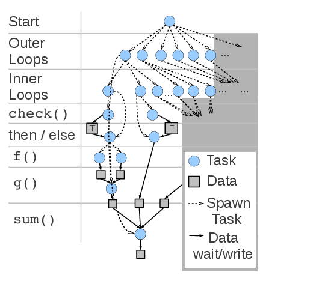

Swift/T is a completely new implementation of the Swift language for high-performance computing. In this implementation, the Swift script is translated into an MPI program that uses the Turbine (hence, /T) and ADLB runtime libraries for highly scalable dataflow processing over MPI, without single-node bottlenecks.
Swift is a naturally concurrent language with C-like syntax. It is primarily used to manage calls to leaf tasks- external functions written in C, C++, Fortran, Python, R, Tcl, Julia, Qt Script, or executable programs. The Swift language coordinates the distribution of data to these tasks and schedules them for concurrent execution across the nodes of a large system.
Swift has conventional programming structures- functions, if, for, arrays, etc. Some functions are connected to leaf tasks, which are expected to do the bulk of the computationally intensive work. Tasks run when their input data is available. Data produced by a task may be fed into the next using syntax like:
If tasks are able to run concurrently, they do: in this, case, two executions of g() run concurrently.
Swift loops and other features provide additional concurrency constructs. Data movement is implicitly performed over MPI.
The Swift compiler, STC, breaks a Swift script into leaf tasks and control tasks. These are managed at runtime by the scalable, distributed-memory runtime consisting of Turbine and ADLB. For example, the following code is broken up into the task diagram:

The previous implementation of the Swift language is Swift/K, which runs on the Karajan grid workflow engine (hence, /K). Karajan and its libraries excel at wide-area computation, exploiting diverse schedulers (PBS, Condor, etc.) and data transfer technologies.
Swift/T is able to execute Swift/K-style app functions and is a natural migration from Swift/K. Key differences include:
Last updated: 2026-03-04 16:35